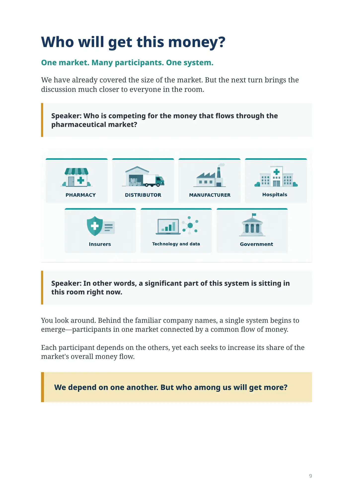
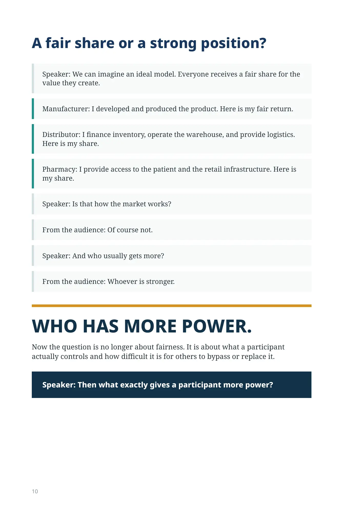
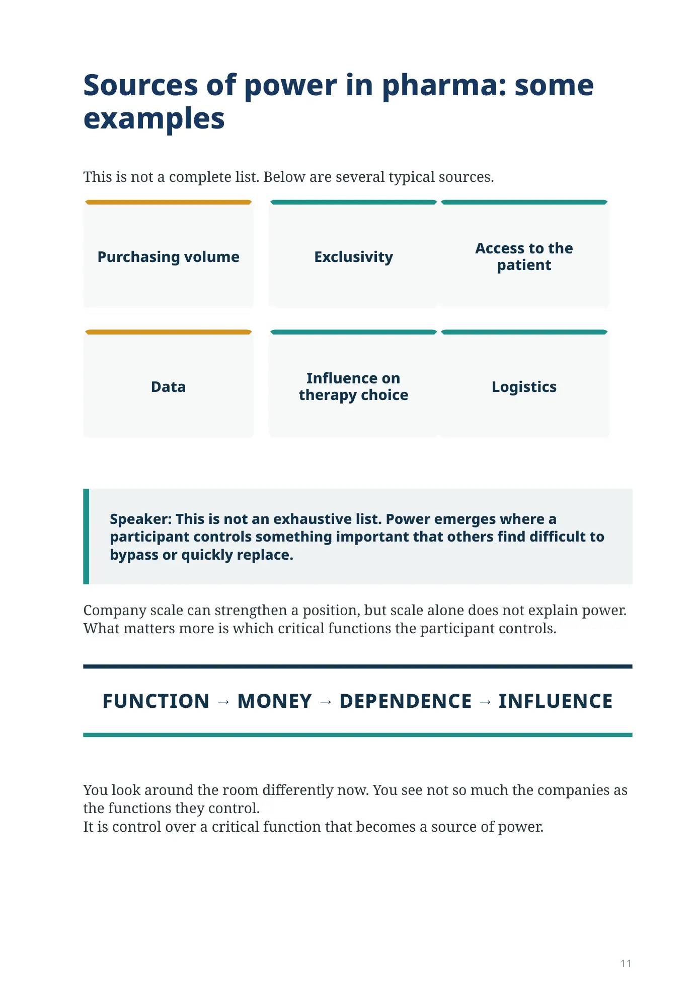
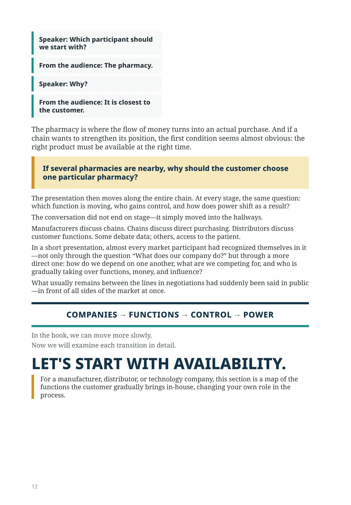
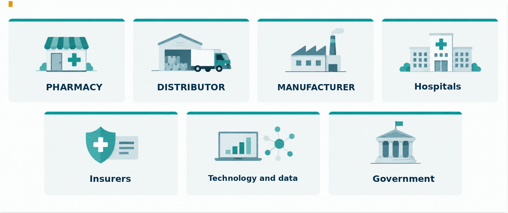

How does the pharmaceutical family divide the money?
Who will get this money?
One market. Many participants. One system.
We have already covered the size of the market. But the next turn brings the discussion much closer to everyone in the room.
Speaker: Who is competing for the money that flows through the pharmaceutical market?

Pharmacies
Distributors
Manufacturers
Insurers
Hospitals
Technology and data
Government
Speaker: In other words, a significant part of this system is sitting in this room right now.
You look around. Behind the familiar company names, a single system begins to emerge—participants in one market connected by a common flow of money.
Each participant depends on the others, yet each seeks to increase its share of the market's overall money flow.
We depend on one another. But who among us will get more?
A fair share or a strong position?
Speaker: We can imagine an ideal model. Everyone receives a fair share for the value they create.
Manufacturer: I developed and produced the product. Here is my fair return.
Distributor: I finance inventory, operate the warehouse, and provide logistics. Here is my share.
Pharmacy: I provide access to the patient and the retail infrastructure. Here is my share.
Speaker: Is that how the market works?
From the audience: Of course not.
Speaker: And who usually gets more?
From the audience: Whoever is stronger.
WHO HAS MORE POWER.
Now the question is no longer about fairness. It is about what a participant actually controls and how difficult it is for others to bypass or replace it.
Speaker: Then what exactly gives a participant more power?
Sources of power in pharma: some examples
This is not a complete list. Below are several typical sources.
Purchasing volume
Exclusivity
Access to the patient
Data
Influence on therapy choice
Logistics
Speaker: This is not an exhaustive list. Power emerges where a participant controls something important that others find difficult to bypass or quickly replace.
Company scale can strengthen a position, but scale alone does not explain power. What matters more is which critical functions the participant controls.
FUNCTION → MONEY → DEPENDENCE → INFLUENCE
You look around the room differently now. You see not so much the companies as the functions they control.
It is control over a critical function that becomes a source of power.
Speaker: Which participant should we start with?
From the audience: The pharmacy.
Speaker: Why?
From the audience: It is closest to the customer.
The pharmacy is where the flow of money turns into an actual purchase. And if a chain wants to strengthen its position, the first condition seems almost obvious: the right product must be available at the right time.
If several pharmacies are nearby, why should the customer choose one particular pharmacy?
The presentation then moves along the entire chain. At every stage, the same question: which function is moving, who gains control, and how does power shift as a result?
The conversation did not end on stage—it simply moved into the hallways.
Manufacturers discuss chains. Chains discuss direct purchasing. Distributors discuss customer functions. Some debate data; others, access to the patient.
In a short presentation, almost every market participant had recognized themselves in it—not only through the question “What does our company do?” but through a more direct one: how do we depend on one another, what are we competing for, and who is gradually taking over functions, money, and influence?
What usually remains between the lines in negotiations had suddenly been said in public—in front of all sides of the market at once.
COMPANIES → FUNCTIONS → CONTROL → POWER
In the book, we can move more slowly.
Now we will examine each transition in detail.
LET'S START WITH AVAILABILITY.
For a manufacturer, distributor, or technology company, this section is a map of the functions the customer gradually brings in-house, changing your own role in the process.